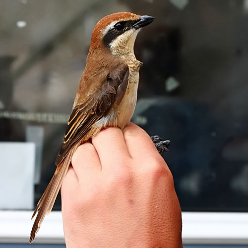

| These photographs accompany records that have been recently submitted to the committee. This record
has been ACCEPTED.  Brown Shrike Lanius cristatus 24 September 2009, Southeast Farallon I., SF 2009-187 © 2009 Matt Brady Back to CBRC Rare Bird Photos |